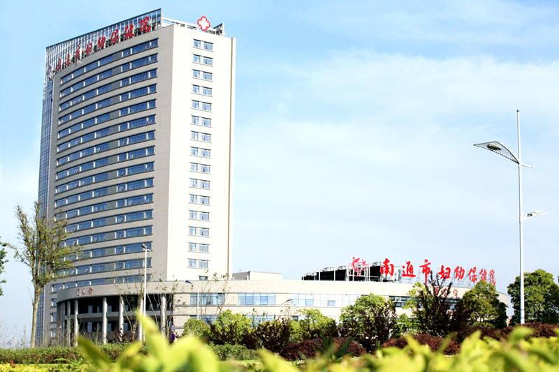

南通市妇幼保健院
作者: Conlin 发布时间：2017-2-28
南通市妇幼保健院（南通大学附属妇幼保健院）是一所集医疗、保健、科研、教学于一体的 三级甲等妇幼保健院。医院始建于八十年代初，1983年4月1日正式开诊，2013年整体迁建至 南通市新城区，毗邻南通市行政中心。
医院位于崇川区世纪大道399号，总建筑面积56000平方米，连通公交多条线路，交通便利。医院 设有23个临床保健医技一级科室及16个住院病区，规划床位1000张，开放床位600张，现有停车 位620个。
医院综合实力雄厚，专科特色明显。近年来，医院妇、产、儿、内、外等临床科室发展齐头并进， 二级分科逐步健全，综合实力明显提升，已成为一所现代化、高水平、有特色的区域性综合医院 。目前医院有江苏省妇幼保健重点学科1个（产前诊断中心），江苏省妇幼保健重点学科建设单位2 个（妇女保健科、儿童保健科），市级重点学科1个（生殖医学中心），市级重点建设学科1个（新 生儿科），市级重点专科5个（产科、微创妇科、新生儿科、生殖医学中心、妇产科实验室），市级重 点建设专科1个（儿童康复科）。卫生部妇科内镜与微创医学妇科培训基地、江苏省住院医师规范化培 训基地、南通市母婴专科护士培训基地、江苏省新生儿疾病筛查南通分中心、江苏省产前诊断筛查南 通分中心均坐落院内。
医学专家荟萃，人才优势明显。医院现有职工900余名，拥有高级职称医务人员近百名，包括享受国务院 政府特殊津贴专家、省“333”、市“226”重点人才、硕士生导师、南通大学兼职教授以及担任省市医 学专业委员会主任委员的专家共30余名。
医院病房环境优雅,医疗设施齐全。拥有核磁共振（MRI）、64排螺旋CT、数字减影X光机、800毫安全自动 遥控X光机、数字胃肠机、全数字化乳腺钼靶机等先进放射类设备，多台四维彩超和数十台进口超声机，智能 产程监护仪和各类监护仪设备近百台，配备耳聋基因筛查设备、全自动染色体核型分析系统、高通量测序仪及 第二代试管婴儿设备等多达上百台的各类大型医疗设备。
医院先后获得国家级爱婴医院、江苏省文明单位、省“三八”红旗集体、南通市文明单位、南通市最佳服务单 位、市级“巾帼文明岗”、妇幼保健工作先进集体等多项荣誉称号。
携手南通妇幼，一生健康无忧。南通市妇幼保健院全体干部职工将以精湛的医术、优良的服务为广大市民的健康保驾护航。